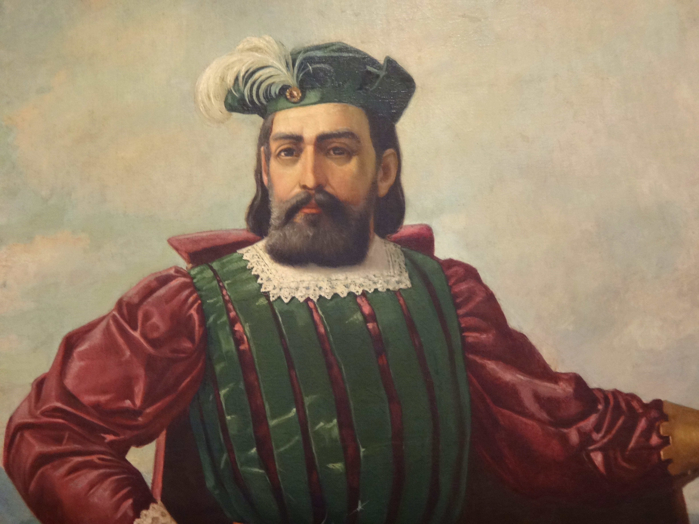
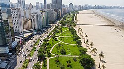
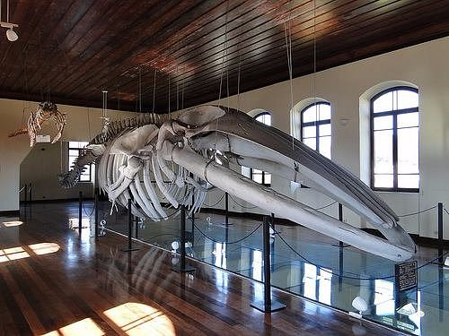

HISTORIA
Fundação em 1546: A vila foi fundada oficialmente por Brás Cubas (que chegou com a expedição de Martim Afonso de Sousa), após transferir o ponto comercial da Ilha de São Vicente para uma área mais abrigada no estuário.
Porto de Santos: Inaugurado oficialmente em 2 de fevereiro de 1892 pela Companhia Docas de Santos, tornou-se o maior e mais importante complexo portuário da América Latina.

DICAS TURISTICAS
Sacramentado pelo Livro dos Records, o maior jardim frontal de praia do mundo está em Santos, acompanhando seis praias em sete quilômetros de extensão. O jardim tem 77 espécies de flores e mais de 1.700 árvores sempre bem tratadas pela prefeitura.

Da Ponta da Praia até a Ilha Urubuqueçaba, que marca a divisa entre São Vicente e Santos, nós temos 8 km de praias limpas e iluminadas, com o maior jardim de praia de todo o mundo com suas flores de vários tons. É um bom espetáculo para os olhos durante o dia ou à noite. Ao longo dessas praias você encontra outros atrativos como o Aquário Municipal, o Cine Arte, a Concha Acústica, a Feira de Artesanato, o Museu do Mar, o Museu da Pesca, o Orquidário.
Santos é facilmente alcançada por ônibus que saem do Terminal Jabaquara, na Capital, a cada 10 minutos. Tão perto que nem dá tempo para a gente cochilar. (E não se esqueça de provar os insuperáveis pastéis do Bar do Carioca, ao lado da Prefeitura!)
